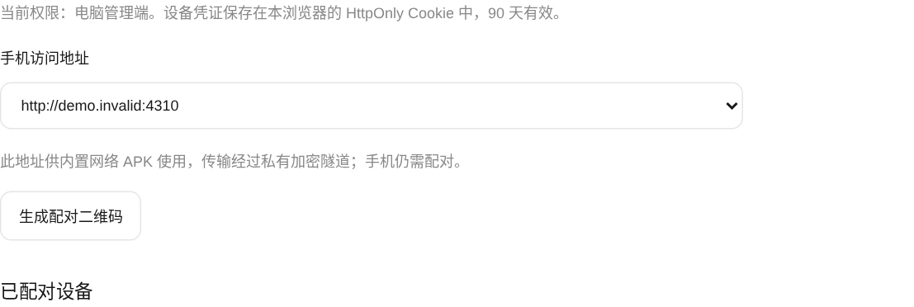

连接你的第一台电脑
以 Linux amd64 电脑和 Android arm64 手机为例。先让两端加入同一个可互访的私网，再用一次性配对码授权手机。开始前，在电脑上用自己的日常用户登录至少一个受支持的助手。
在电脑上启动服务
从下载区获取 Linux DEB，并从同一发行页下载它的 .sha256 文件。在下载目录执行前两条命令，随后以日常用户运行 g-collie。
sha256sum -c g-collie_0.3.35_amd64.deb.sha256
sudo apt install ./g-collie_0.3.35_amd64.deb
g-collie电脑管理网页默认位于 http://127.0.0.1:4310/。只有 SSH 终端时，按服务器部署说明操作。
让电脑和手机入网
在电脑打开「服务端管理 → 网络与服务 → 内置远程连接」，启动并完成 Tailscale 授权。在手机安装 Android App，从「⋮ → 远程连接」登录或授权加入同一私网。复制电脑页面给出的完整手机访问地址，保留协议和端口。

配对并打开原会话
电脑进入「手机配对与设备」，选中刚才的私网地址并点击「生成配对二维码」。在 App 的连接页填入完整地址和六位码，或粘贴完整配对链接，核对后提交。配对码十分钟有效，用过一次后重新生成。

连接成功后，核对手机顶部的电脑名称，从「最近会话」打开原来的任务。能否继续发送、追加或审批，取决于助手来源、设备权限和当前会话状态。
常见问题
也可以从浏览器访问吗？
可以。浏览器所在设备须能访问电脑服务。浏览器与 Android App 各用一份设备授权，请分别生成配对码。手机端的 127.0.0.1 指向手机自身。
电脑需要一直开着吗？
执行任务的电脑需要开机、联网并运行服务。可用常开的 Linux 电脑或服务器作为工作电脑。
手机安装 APK 时提示签名冲突怎么办？
先核对原安装包的签名。旧内测用户应从同次发行页选择匹配旧证书的覆盖包。详情见发行说明。